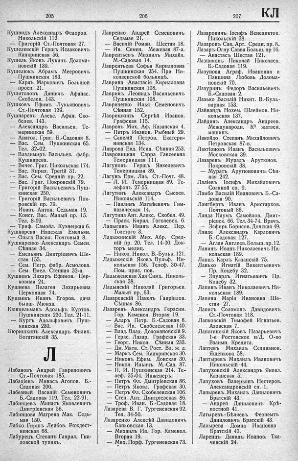

Лист источника 419
Скан

Распознанный текст
205
Кушвидъ Александръ Федоров.
Никольскій 112.
— Григорій Ст.-Почтовая 27.
Кушелевскій Гершъ Исааковичъ
Канкринская 56.
Кушель Яковъ Лукичъ Долома-
новскій 139.
Кушелюкъ Абрамъ Мееровичъ
Пушкинская 183.
— Карлъ Марковичъ Большой
просп. 21.
Кушитоловъ Даніилъ Афанас.
Скобелев. 143.
Кушковъ Ефимъ Лукьяновичъ
Ст.-Почтовая 139.
Кушнаревъ Алекс. Афан. Ско-
белев. 143.
— Александръ Васильев. Те-
мерницкая 59.
— Анатол. Григ. Б.-Садовая 8.
— Вас. Сем. Пушкинская 65.
Тел. 32-02.
— Владимиръ Васильев. фабр.
Кушнарева.
— Вячес. Григ. Никольская 174.
— Вас. Кирил. Третій 31.
— Вас. Сем. Средній пр. 22.
— Вас. Григ. Покровскій 79.
— Григорій Васильевичъ Пуш-
кинская 250.
— Григорій Васильевичъ Пок-
ровскій пр. 79.
— Иванъ Антон. Седьмая 19.
— Конст. Вас. Малый пр. 15.
Тел. 8-09.
— Триф. Самойл. Кузнецкая 6.
Кушнарева Надежда Емельян.
— Ольга Васил. Почтовый 8.
Кушнаренко Александръ Семен.
Сѣнная 34.
— Емельянъ Дмитріевичъ Ше-
стая 155.
— Сем. Петр. фабр. Асмолова.
— Сем. Емел. Степная 32-а.
Кушневъ Захаръ Ефимов. Цер-
ковная 24.
Кушнева Пелагея Захарьевна
Церковная 74.
Кущаевъ Иванъ Егоров. дача
бывш. Мюнха.
Кюнцельманъ Адольфъ Куртов.
Пушкинская 230. Тел. 21-11.
— Куртъ Адольфовичъ Пуш-
кинская 230.
Кюришкинъ Александръ Филип.
Богатянскій 35.
Л
Лабановъ Андрей Гавриловичъ
Ст.-Почтовая 185.
Лабаціевъ Минасъ Агопов. Б.-
Садовая 200.
Лабезный Василій Семеновичъ
Б.-Садовая 119. Тел. 22-91.
Лабинцевъ Минасъ Яковлевичъ
Дмитріевская 56.
Лабинцова Матрена Мак. Седь-
мая 150.
Лабко Гиршъ Лейбов. Рождест-
венская 68.
Лабурецъ Степанъ Гаврил. Гни-
ловской тупикъ.
206
Лавренко Андрей Семеновичъ
Седьмая 21.
— Василій Роман. Шестая 18.
— Ив. Семен. Межевая 87-а.
Лаврентьевъ Михаилъ Михайл.
М.-Садовая 14.
Лаврентьева Софья Кирилловна
Пушкинская 254. При Ни-
колаевской больницѣ.
Лаврина Анастасія Кирилловна
Пушкинская 108.
Лавринъ Леонидъ Васильевичъ
Пушкинская 108.
Лавриченко Илья Семеновичъ
Сѣнная 152.
Лавришкинъ Сергѣй Иванов.
Графская 115.
Лавровъ Мих. Аф. Казанская 4.
— Петръ Иванов. Рыбный 29.
— Савелій Петров. Екатери-
нинская 134.
Лаврова Евд. Исид. Сѣнная 253.
Лавровицкая Сарра Гавсеевна
Темерницкая 111.
Лагуновъ Гершъ Янкелевичъ
Темерницкая 89.
Лагунъ Ерм. Лаз. Ст.-Почт. 48.
— Л. И. Темерницкая 89. Те-
лефонъ 27-55.
Лагутинъ Александръ Сысоев.
Никольскій 114.
— Павлинъ Матвѣевичъ Гим-
назическая 14.
Лагутина Ант. Алекс. Скобел. 49.
— Праск. Кирил. Гоголевск. 6.
Ладыгинъ Иванъ Алекс. Пер.
Толстого 3.
Ладыжинскій Мих. Абр. Сред-
ній пр. 20. Тел. 14-00. Док-
торъ медиц.
— Никол. Никол. В.-Бульв. 121.
Ладыжескій Яковъ Вульф. Ни-
кольская 156. Телеф. 30-47.
Пом. прис. пов.
Ладыженская Хая Симх. Николь-
ская 38.
Ладынскій Николай Григорьев.
Малый пр. 63.
Лазаревскій Павелъ Гавріилов.
Сѣнная 86.
Лазаревъ Александръ Герасим.
Гор. Каменол. Вторая 19.
— Алдръ Петр. Б.-Садовая 8.
— Вас. Ив. Скобелевская 140.
— Влад. Влад. Доломановскій 9.
— Герас. Лазар. Графская 33.
— Георг. Никол. Сѣнная 233.
— Дм. Матв. Ст. Рост. Вл. ж. д.
— Маркъ Сем. Канкринская 30.
— Никонъ Ефим. Донская 30.
— Никол. Ильичъ М.-Сад. 87.
— П. И. Пушкинская 214. Те-
леф. 35-04. Инженеръ.
— Петръ Фл. Дмитріевская 86.
— Петръ Яковл. Графская 30.
— Петръ Фл. Скобелевская 106.
— Степ. Ант. Дмитріевская 86.
— Троф. Иван. Б.-Садовая 18.
Лазарева В. Г. Тургеневская 92.
Тел. 34-50.
Лазаренко Алексѣй Давидовичъ
Байковская 13.
— Михаилъ Ив. Гор. Каменол.
Вторая 19.
— Мих. Порф. Тургеневская 73.
207
КЛ
Лазаровичъ Іосифъ Венедиктов.
Никольскій 38.
Лазаровъ Сав. Арт. Средн. пр. 8.
Лазаръ-Оглу Савва Больш. пр 16.
— Анастасъ Шестая 121.
Лазниковъ Николай Николаев.
Б.-Садовая 119.
Лазунова Аграф. Ивановна и
Паншина Любовь Долома-
новскій 70.
Лазуринъ Федоръ Васильевичъ
Б.-Садовая 2.
Лазько Василій Никит. В.-Буль-
варная 153.
Лайвандъ Нохем. Шлеймов. Ни-
кольская 137.
Лайдинъ Александръ Андреев.
Международн. К⁰ жатвен.
машинъ.
Лакойдо Степанъ Михайловичъ
Петровская 87-в.
Лактіоновъ Иванъ Васильевичъ
Московская 39.
Лазаревъ Мурадъ Арутюнов.
Покровскій 38.
— Муратъ Арутюновичъ Сѣн-
ная 242.
Лаліевъ Іосифъ Михайловичъ
Соляной сп. 9.
Ламбо Василій Ивановичъ Б.-Са-
довая 90.
Лангбертъ Иванъ Аристархов.
Почтовый 86.
Ланда Наумъ Самойлов. Дмит-
ріевск. 66. Тел. 34-74. Врачъ.
— Эсфирь Борисов. Донская 49.
Ланде Александръ Карловичъ
Б.-Садовая 127.
— Аглая Англеев. Больш. пр. 12.
Ланинъ Иванъ Николаевичъ Ни-
кольская 189.
Ланцъ Карлъ Казанскій 75.
Ланько Игнатій Викентьевичъ
Пр. Коцебу 32.
— Эдуардъ Игнатьевичъ Пр.
Коцебу 32.
Лапинъ Иванъ Николаевичъ Ни-
кольская 189.
Лапина Марія Ивановна Ше-
стая 27.
Лаписъ Соломонъ Давидовичъ
Ст.-Почтовая 118.
Лапковскій Тимофей Игнатьев.
Азовская 7.
Лапотинскій Яковъ Назарьевичъ
1-е Ростовское н/Д. О-во
Взаимн. Кредита.
Лаптевъ Михаилъ Селиванов.
Ященкова 58.
Лаптыревъ Михаилъ Ивановичъ
Никольскій 44.
Лапуховскій Александръ Яковл.
Казанская 5.
Лапуховъ Валерьянъ Нестеров.
Александровскій сп. 1.
Лапыревъ Михаилъ Даниловичъ
Братскій 43.
— Андрей Даниловичъ Крѣ-
постной 41.
Латыревъ-Бѣляевъ Феопемтъ
Даниловичъ Братскій 43.
Лапырева Домна Ивановна
Братскій 43.
Ларенцъ Давидъ Иванов. Тка-
чевскій 24.